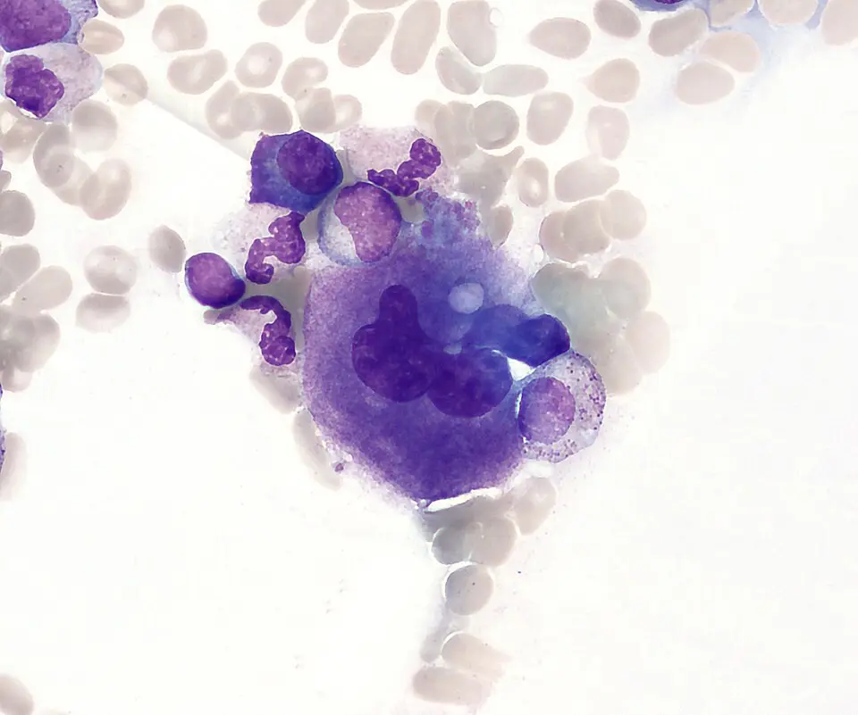
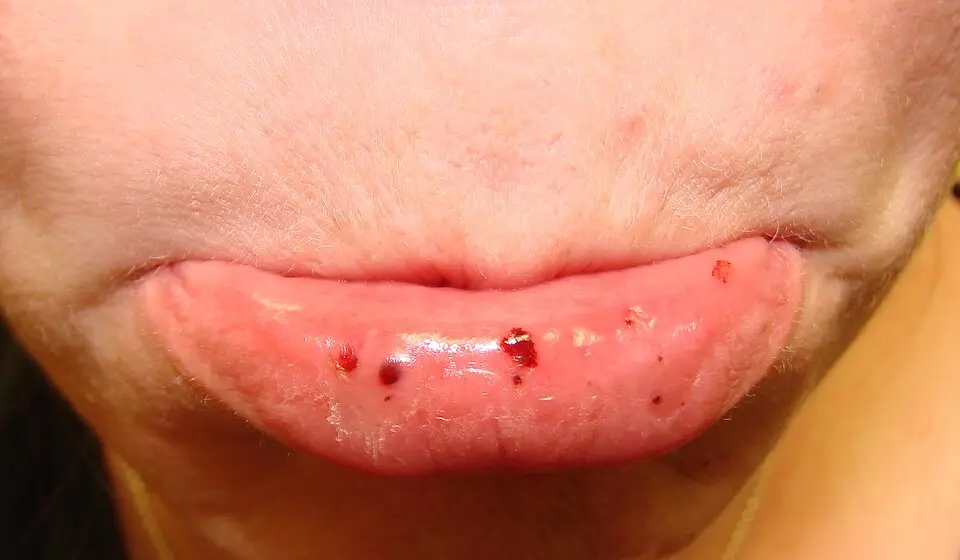

DX.6 — Purpura thrombopénique immunologique
Une épistaxis bilatérale avec des pétéchies impose une numération plaquettaire le jour même, car le PTI saigne surtout sous 20 G/LS1. Le médecin vérifie d’abord que la thrombopénie est réelle et isolée, puis il écarte une microangiopathie thrombotique, qui tue en quelques joursS1. Il traite ensuite le saignement, non le chiffre : la décision repose sur le score hémorragique, le terrain et les médicamentsS1S2.
1. Définition
Le centre de référence des cytopénies auto-immunes de l’adulte (CeReCAI) a publié en octobre 2024 un protocole national de diagnostic et de soins (PNDS)S1. Ce PNDS définit le PTI par une thrombopénie isolée inférieure à 100 G/LS1. Cette thrombopénie survient en l’absence d’autre cause évidente et dépend en partie d’auto-anticorps antiplaquettesS1. Le PNDS pédiatrique de 2025 reprend le même seuil de 100 G/L, inférieur à la limite usuelle de 150 G/LS3. Le PTI est dit primaire quand aucune cause n’est trouvée, et secondaire quand une maladie ou un médicament l’expliqueS3.
2. Épidémiologie (Suisse, puis Europe)
Les données réunies autour du registre PARC-ITP, coordonné à l’hôpital universitaire pédiatrique de Bâle, décrivent le PTI nouvellement diagnostiqué de l’enfant, de l’adolescent et de l’adulteS4. Une thrombopénie initiale inférieure à 20 G/L y concerne 79 % des enfants, 64 % des adolescents et jeunes adultes, et 58 % des adultesS4. L’épistaxis inaugure la maladie chez 20 % des enfants et 16 % des adultes de ce registreS4. L’hémorragie intracrânienne survient dans 0,4 à 0,6 % des cas pédiatriques et dans 1,9 % des cas adultes pendant la première annéeS4.
En France, l’incidence atteint 3/100 000 par an chez l’adulte et 2,89/100 000 par an chez l’enfantS1S3. L’Angleterre mesure 6,1/100 000 par an chez l’adulte entre 2010 et 2014, avec un pic de 23,9/100 000 chez l’homme de 80 ans ou plusS7. L’ensemble des chiffres montre que l’âge sépare deux maladies : l’enfant guérit souvent, l’adulte devient souvent chroniqueS1S3.
Fréquence, terrain et évolution
| Chiffre | Population | Année | Source |
|---|---|---|---|
| Incidence 3/100 000/an ; prévalence proche de 50/100 000 ; sex-ratio femme/homme voisin de 1,3 | Adultes, France | 2024 | S1 |
| Incidence 4,2 puis 6,4/100 000/an ; moyenne 6,1/100 000/an | Adultes, Angleterre | 2003–2014 | S7 |
| Incidence 2,89/100 000/an ; pic entre 2 et 5 ans | Moins de 18 ans, France | 2025 | S3 |
| Passage à la chronicité 60 à 70 % | Adultes | 2024 | S1 |
| Guérison spontanée en moins de 3 mois chez environ 50 % ; chronicité 15 à 20 % | Enfants | 2025 | S3 |
| Chronicité 28,7 % sur 944 enfants | Registre ICIS | 2026 | S6 |
| Chronicité 50 % à 12 mois ; plaquettes médianes 12 G/L ; découverte fortuite 17 % | 12 à 25 ans, registres PARC-ITP et CARMEN | 2004–2021 | S5 |
| PTI secondaire 20 % chez l’adulte, 15 à 20 % chez l’enfant | France | 2024–2025 | S1S3 |
| Aggravation de la thrombopénie chez 30 % des patientes aux deux derniers trimestres | Grossesse | 2024 | S2 |
L’incidence augmente avec l’âge chez l’adulte, et l’homme de plus de 60 ans porte l’incidence la plus élevéeS1. Chez l’enfant, l’anamnèse recherche une infection ou un vaccin survenus dans les deux semaines précédentesS3. Le registre anglais signale aussi une hausse marquée chez la femme de 30 à 39 ans, de 8,7 % par anS7.
3. Physiopathologie
Le PTI se comprend à partir de l’hémostase primaire, que la fenêtre Base à connaître installe avant la chaîne pathologiqueS3. L’amorce est une perte de tolérance : des lymphocytes B produisent des anticorps contre les glycoprotéines plaquettaires, et les lymphocytes T régulateurs fonctionnent malS1S3. Les plaquettes opsonisées sont ensuite captées par les phagocytes mononucléés, surtout dans la rateS3. La moelle ne compense pas cette perte, car la production mégacaryocytaire reste relativement insuffisanteS1.
Base à connaître : pourquoi le PTI saigne aux muqueuses
Les mégacaryocytes de la moelle produisent les plaquettes sous l’effet de la thrombopoïétine (TPO), qui active son récepteur MPL et la voie JAK2/STAT5S3. La numération normale dépasse 150 G/L, mais cette limite varie selon les populations, d’où le seuil diagnostique de 100 G/LS3.
Ce frottis médullaire coloré montre un mégacaryocyte, la cellule qui produit les plaquettes, entouré de cellules de la moelle.

Lisez d'abord seul ce cliché (mégacaryocyte dans un frottis de moelle) : cherchez vous-même le signe.
La copie annotée (mégacaryocyte dans un frottis de moelle) porte des repères numérotés, qui sont décrits ci-dessous.
- Le noyau du mégacaryocyte est volumineux et plurilobé, car la cellule réplique son ADN sans se diviser.
- Le bord granuleux du cytoplasme libère les plaquettes nouvellement formées.
- Les hématies voisines donnent l’échelle : le mégacaryocyte est bien plus grand qu’elles.
Ce que l'image décide. Le myélogramme ne se demande que devant des signes d’hémopathie ou un échec de première ligneS1.

Lors d’une brèche capillaire, les plaquettes adhèrent au collagène exposé, s’activent, puis s’agrègent en clou plaquettaire : c’est l’hémostase primaireS17. Sans assez de plaquettes, ce clou manque ; le saignement devient alors immédiat, superficiel et punctiforme, ce qui dessine les pétéchiesS1S17.
Les quatre temps de l’hémostase. Ce schéma didactique montre un vaisseau rompu en coupe longitudinale (panneaux 1 à 4) et la cascade de la fibrine (b), avec des légendes en anglaisS17.

Lisez d'abord seul ce cliché (les quatre temps de l’hémostase) : cherchez vous-même le signe.
La copie annotée (les quatre temps de l’hémostase) porte des repères numérotés, qui sont décrits ci-dessous.
- Les hématies, les leucocytes et les plaquettes s’échappent par la brèche du vaisseau.
- Le muscle lisse se contracte et réduit d’abord la perte de sang.
- Les plaquettes collent au collagène rompu et s’agrègent en clou : ce temps manque dans le PTI.
- La fibrine consolide ensuite le clou ; ce temps reste normal dans le PTI, car les facteurs de coagulation sont intacts.
- Le TP et le TCA explorent le temps de la fibrine ; ils restent donc normaux dans le PTI et ne mesurent pas le clou plaquettaireS1.
Ce que l'image décide. Devant des pétéchies ou une épistaxis bilatérale, le médecin demande la numération plaquettaire avant tout bilan de coagulationS1.

Les muqueuses nasale et buccale, fines et exposées aux microtraumatismes du mouchage et de la mastication, saignent donc les premières. À l’inverse, l’hémarthrose et l’hématome musculaire profond orientent vers un déficit de la coagulation ; le déficit en facteur Willebrand du DX.7 saigne, lui, aux muqueuses comme le PTI.
Le saignement suit la profondeur de la thrombopénie : un saignement cutanéo-muqueux traduit habituellement moins de 20 G/L, un saignement viscéral moins de 10 G/L ou une anticoagulationS1. L’hémorragie grave est presque toujours précédée de saignements cutanéo-muqueux annonciateurs, que l’examen doit donc chercherS1. La corrélation relie chaque perturbation à l’examen qui la montre et au traitement qui la corrigeS1S3.
Perturbation, exploration, thérapeutique
| Perturbation | Exploration qui la montre | Thérapeutique qui la corrige |
|---|---|---|
| Auto-anticorps qui opsonisent les plaquettes | Aucun test de routine ; le MAIPA n’aide qu’en cas de difficultéS1 | Corticoïdes, qui freinent l’immunité ; rituximab, qui détruit les lymphocytes BS1 |
| Phagocytose splénique via les récepteurs Fc | Durée de vie isotopique des plaquettes inférieure à 3,5 joursS1 | Immunoglobulines intraveineuses (IgIV), immunomodulatricesS9 ; splénectomie en dernier recoursS1 |
| Production médullaire inadaptée | Myélogramme : mégacaryocytes normaux ou nombreuxS1 | Agonistes du récepteur de la thrombopoïétine (ARTPO)S3 |
| Hémostase primaire défaillante | Numération, examen de la peau et des muqueusesS1 | Transfusion plaquettaire en urgence vitale seulement ; acide tranexamique en appointS1 |
Les corticoïdes améliorent souvent les saignements avant de faire monter les plaquettes, ce qui suggère un effet hémostatique propreS1. Les ARTPO pourraient aussi restaurer les lymphocytes T régulateurs, ce qui expliquerait des rémissions prolongées après leur arrêtS3.
4. Démarche diagnostique
Le PTI reste un diagnostic d’élimination, car aucun test ne l’affirmeS2. Le médecin recherche d’abord les graves : une hémorragie intracrânienne, une microangiopathie thrombotique (MAT), une leucémie ou une thrombopénie induite par l’héparine (TIH)S1. Il écarte ensuite les fréquents : la fausse thrombopénie à l’EDTA (acide éthylène-diamine-tétra-acétique), un médicament, une cirrhose et un déficit en facteur Willebrand de type 2BS1S2. Chaque diagnostic discriminant se tranche par un signe ou un examen, que la fenêtre nomme avec son piègeS1.
Les graves d’abord, puis les fréquents
| Diagnostic | Élément qui tranche | Piège | Conduite si positif |
|---|---|---|---|
| 🚩 Hémorragie intracrânienne | Céphalée inhabituelle ou signe de localisation, puis scanner cérébral sans injectionS1 | Attendre le scanner pour traiter | Triple association corticoïdes, IgIV et plaquettes, sans délaiS1 |
| 🚩 Microangiopathie thrombotique | Schizocytes, hémolyse, réticulocytes élevésS1 | Les schizocytes peuvent manquer au débutS1 | Urgence vitale ; refaire le frottis si l’hémolyse persisteS1 |
| 🚩 Leucémie, aplasie, myélodysplasie | Autres lignées anormales, blastes, macrocytoseS1 | Une anémie par saignement n’est pas une seconde lignée atteinteS1 | Myélogramme avec cytogénétiqueS1 |
| 🚩 Thrombopénie induite par l’héparine | Héparine introduite 5 à 21 jours avant, thrombose associéeS1 | Prendre la thrombose pour une complication isolée | Arrêt de l’héparine et avis spécialisé |
| Fausse thrombopénie | Agrégats au frottis, numération normale sur tube citrateS1 | Thrombopénie profonde sans aucun saignementS1 | Aucun traitement ; rassurer et documenterS1 |
| Thrombopénie médicamenteuse | Chronologie : médicament récent, automédication compriseS1 | Oublier un antalgique ou un traitement ponctuel | Arrêt du médicament, déclaration de pharmacovigilanceS1 |
| Hypersplénisme, cirrhose | Splénomégalie, signes d’hypertension portaleS1 | La rate peut rester de taille normaleS1 | Bilan hépatique et imagerieS1 |
| Willebrand de type 2B | Saignement marqué malgré une thrombopénie modéréeS1 | Traiter un PTI qui ne répond jamais | Facteur VIII et facteur Willebrand ; voir DX.7S1 |
Le PNDS demande les numérations antérieures, car elles datent la thrombopénie et révèlent parfois une chronicité dès le diagnosticS1. Une thrombopénie familiale au premier degré ou une leucémie aiguë familiale oriente vers une forme constitutionnelleS1.
L’erreur classique du débutant consiste à traiter un chiffre isolé à 8 G/L chez un patient qui ne saigne pasS1. Le raisonnement juste avance par étapes : discordance clinique, puis frottis, puis contrôle sur tube citrate, qui découvre une fausse thrombopénie dans ce casS1. Ce contrôle sous-estime la numération d’environ 10 %, ce qui reste négligeable pour la décisionS1.
5. Anamnèse ciblée et drapeaux rouges
L’anamnèse caractérise d’abord chaque saignement : l’épistaxis, le purpura, le saignement buccal, les règles abondantes et la céphaléeS1S2. Chaque question porte une raison : le siège dit la gravité, la durée dit le risque, et le contexte dit la causeS1S3.
Épistaxis : typique si bilatérale et sans lésion locale
L’épistaxis du PTI est volontiers bilatérale, spontanée et récidivante, car elle naît d’une hémostase primaire défaillante et non d’un vaisseau uniqueS1. Le score hémorragique de l’adulte lui donne 2 points si elle est unilatérale et 3 points si elle est bilatéraleS1.
Chez l’enfant, une épistaxis de plus de 5 minutes classe le saignement en « modéré à haut risque » du score de Buchanan-Adix modifiéS3. Sur 1793 enfants, 5,5 % saignaient du nez plus de 30 minutes, et cette durée annonçait un risque d’hémorragie sévère dans l’annéeS3.
Une épistaxis unilatérale, toujours du même côté, avec obstruction ou rhinorrhée, n’est pas typique du PTI et fait chercher une cause locale, comme au DX.10.
Purpura : pétéchies déclives qui ne s’effacent pas
Le purpura pétéchial apparaît sans traumatisme, prédomine aux membres inférieurs et ne s’efface pas à la vitropression, car le sang a quitté les capillairesS1. Il est typique quand il s’associe à des ecchymoses spontanées sans fièvre ni altération de l’état généralS1.
Le score de l’adulte compte 1 point pour le purpura pétéchial des membres, 3 points s’il est généralisé et 4 points pour le purpura ecchymotique généraliséS1. Un purpura fébrile ou nécrotique n’est pas un PTI et impose d’éliminer une infection grave avant tout.
Bulles hémorragiques et gingivorragies : un signe de gravité
Les bulles hémorragiques endobuccales et les gingivorragies spontanées valent 5 points dans le score de l’adulte, car elles précèdent les saignements viscérauxS1. Chez l’enfant, un purpura buccal qui gêne la mastication ou des bulles hémorragiques classent le saignement en haut risqueS3.
Une gingivorragie provoquée par le brossage, sans bulle ni pétéchie, oriente plutôt vers une gingivite que vers une thrombopénie profonde.
Ménorragies : quantifier et chercher une lésion
Des règles nettement plus longues ou plus abondantes qu’avant la thrombopénie traduisent un saignement muqueux à haut risque chez l’adolescenteS3. Le PNDS pédiatrique propose de quantifier leur abondance par le score de HighamS3.
Chez l’adulte, une métrorragie importante compte pour 4 points sans anémie et 10 points avec une perte de plus de 2 g/dL d’hémoglobineS1. Tout saignement gynécologique, digestif ou urinaire fait chercher une lésion organique avant d’accuser la thrombopénieS2.
Céphalée : atypique et alarmante
La céphalée ne fait pas partie du tableau habituel du PTI ; une céphalée inhabituelle fait donc craindre une hémorragie intracrânienneS1. Un signe de localisation, une somnolence ou des vomissements imposent un scanner cérébral sans injectionS1.
Chez l’enfant, une hématurie et un traumatisme crânien récent s’ajoutent à une thrombopénie inférieure à 20 G/L comme facteurs d’hémorragie intracrânienneS3.
Le contexte cherche une cause secondaire : un médicament nouveau, une infection ou un vaccin récent, une maladie auto-immune et un déficit immunitaireS1S3. L’anamnèse recherche aussi les signes extra-hématologiques, comme des arthralgies, un syndrome de Raynaud ou une photosensibilité, qui évoquent un lupusS2. Elle note enfin les antiagrégants, les anticoagulants, l’âge et les comorbidités, car ils relèvent le seuil d’interventionS1. Les drapeaux rouges imposent chacun une action immédiateS1S2.
Drapeau rouge, signification, action immédiate
| Drapeau rouge | Signification | Action immédiate |
|---|---|---|
| Céphalée inhabituelle, déficit, troubles de conscience | Hémorragie intracrânienneS1 | Scanner sans injection et traitement d’urgence vitaleS1 |
| Méléna, hématurie macroscopique, métrorragie avec anémie | Saignement viscéral, souvent sous 10 G/LS1 | Hospitalisation, groupe sanguin et recherche d’agglutinines irrégulièresS2 |
| Bulles hémorragiques buccales, épistaxis bilatérale | Saignement muqueux annonciateurS1 | Hospitalisation en urgence si la thrombopénie est récenteS2 |
| Anticoagulant ou double antiagrégation | Risque hémorragique majoréS1 | Seuil d’intervention relevé à 50 G/LS1 |
| Fièvre, adénopathies, splénomégalie, amaigrissement | Hémopathie ou maladie systémiqueS1 | Frottis, myélogramme et avis hématologiqueS1 |
| Ictère, urines foncées, confusion | Hémolyse et microangiopathie possiblesS1 | Schizocytes, haptoglobine et LDH (lactate-déshydrogénase) en urgenceS1 |
6. Examen physique ciblé, région par région
L’examen suit l’ordre réel du lit du malade : constantes, peau, bouche, fosses nasales, aires ganglionnaires et abdomen, puis examen neurologiqueS1S2. Hors saignement, l’examen d’un PTI primaire reste normal, et toute anomalie supplémentaire remet le diagnostic en causeS2.
Constantes et état général
Le médecin mesure la fréquence cardiaque, la pression artérielle et la conscience, car un saignement abondant ou avalé peut déjà retentir sur l’hémodynamique. Une tachycardie avec pâleur oriente vers une perte sanguine qui dépasse l’épistaxis visible.
La pression artérielle se contrôle aussi pour une autre raison : une hypertension mal équilibrée majore le risque hémorragique et relève le seuil d’intervention à 50 G/LS1. La fièvre n’appartient pas au PTI primaire et fait chercher une infection ou une hémopathieS1.
Peau : pétéchies, ecchymoses et vitropression
L’inspection de toute la peau se fait en lumière franche, en insistant sur les zones déclives, les points de pression et les sites de ponction. Il appuie une lame de verre sur la lésion : la pétéchie persiste, alors qu’un érythème s’efface.
Le PNDS demande de préciser si le purpura reste limité aux membres ou devient généralisé, et si les ecchymoses sont limitées ou diffusesS2. Un purpura infiltré et palpable évoque une vascularite, non un PTI, car il traduit une inflammation de la paroi.
Cavité buccale : le premier endroit à ouvrir
L’examen porte sur la muqueuse jugale, le palais, la langue et les gencives, avec un abaisse-langue et une lampe. Il cherche des bulles hémorragiques, des pétéchies du palais et des gingivorragies spontanéesS2.
Ce cliché montre des bulles hémorragiques de la lèvre inférieure, photographiées en lumière directe chez un patient atteint de PTI.

Lisez d'abord seul ce cliché (bulles hémorragiques de la lèvre inférieure) : cherchez vous-même le signe.
La copie annotée (bulles hémorragiques de la lèvre inférieure) porte des repères numérotés, qui sont décrits ci-dessous.
- Une bulle hémorragique bombe sur la muqueuse labiale et signe un saignement muqueux.
- La plus grosse bulle s’est rompue et laisse une érosion qui saigne au contact.
- Des pétéchies punctiformes accompagnent les bulles et ne s’effacent pas.
- Une bulle hémorragique buccale pèse 5 points dans le score de l’adulte, car elle annonce un saignement viscéralS1.
- Une lésion herpétique ou une morsure ne contient pas de sang frais et ne s’accompagne pas de pétéchies.
Ce que l'image décide. Le médecin demande une numération le jour même et hospitalise si la thrombopénie est récente, car ces bulles précèdent les hémorragies gravesS1S2.

Ce signe pèse lourd, car les bulles hémorragiques comptent 5 points dans le score de l’adulte et classent l’enfant en haut risqueS1S3.
Fosses nasales : bilatéralité et absence de lésion focale
Après mouchage, le médecin examine les deux fosses nasales au spéculum et à la lumière frontale, tache vasculaire comprise, selon les gestes de la Phase A. Dans le PTI, il trouve volontiers un suintement diffus des deux côtés, sans point vasculaire unique.
Des croûtes sanguines dans les narines suffisent déjà, chez l’enfant, à classer le saignement en « modéré à bas risque »S3. Une masse, une ulcération ou une perforation septale orientent vers une autre cause et vers les autres DX du LOT.
Syndrome tumoral : son absence soutient le PTI
La palpation porte sur les aires cervicales, axillaires et inguinales, puis sur le foie et la rate en inspiration profonde. Le PTI primaire est dépourvu de syndrome tumoral : ni adénopathie ni hépatosplénomégalieS2.
Une splénomégalie oriente vers un hypersplénisme ou une hémopathie, et des adénopathies vers une hémopathie lymphoïdeS1. Le PNDS impose alors un myélogramme, même si la thrombopénie paraît isoléeS1.
Examen neurologique et fond d’œil
Le médecin évalue la conscience, la nuque, la motricité et le langage, car un déficit discret peut révéler une hémorragie intracrânienneS1. Le PNDS juge le fond d’œil inutile, car l’indication thérapeutique repose sur le saignement cutanéo-muqueuxS1.
L’examen recherche aussi des arthralgies, une éruption photosensible ou un syndrome de Raynaud, qui évoquent une maladie auto-immune associéeS2.
7. Approche syndromique
Le PTI se présente comme un syndrome hémorragique de l’hémostase primaire, parfois compliqué d’un syndrome anémique ou d’un syndrome neurologiqueS1. Le tableau des syndromes sépare les signes fonctionnels des signes physiques et donne leur mécanismeS1S3.
7.1 à 7.3 : syndromes, signes fonctionnels, signes physiques
| Syndrome | Signes fonctionnels | Signes physiques |
|---|---|---|
| 7.1 Hémorragique de l’hémostase primaire | Épistaxis, gingivorragies, règles abondantes, ecchymoses spontanéesS1 | Pétéchies déclives, ecchymoses, bulles buccalesS1 |
| 7.2 Anémique par saignement | Fatigue, dyspnée d’effort, palpitations | Pâleur, tachycardie ; carence martiale secondaireS1 |
| 7.3 Hémorragie intracrânienne | Céphalée inhabituelle, vomissementsS1 | Signe de localisation, trouble de conscienceS1 |
Le syndrome hémorragique se reconnaît par son siège superficiel et son déclenchement immédiat, car la plaquette agit dans les premières secondes. Le syndrome anémique s’explique par la perte sanguine, et le PNDS rappelle que l’anémie par saignement ne remet pas en cause le caractère isolé de la thrombopénieS1. Le syndrome neurologique, rare, impose la conduite d’urgence vitale sans attendre le bilanS1.
Une fatigue anormale accompagne très souvent la maladie, sans lien direct avec la numération, et altère la qualité de vieS2. Le médecin la recherche donc à chaque consultation, avec l’anxiété et la limitation des activitésS2.
8. Diagnostic positif et critères
Le PNDS de 2024 retient le PTI devant une thrombopénie isolée et vérifiée, un examen normal hors saignement et un bilan minimal négatifS2. Les critères précisent ce qui suffit, ce qui ne suffit pas et la stadification évolutiveS1S3. Deux scores hémorragiques, l’un adulte et l’autre pédiatrique, guident ensuite le traitementS1S3.
Critères du PNDS 2024 et phases évolutives
| Critère | Exigence | Source |
|---|---|---|
| Seuil | Plaquettes inférieures à 100 G/L ; contrôle à distance entre 100 et 150 G/L | S1 |
| Vérification | Absence d’agrégats ; contrôle sur tube citrate si discordance | S1 |
| Isolement | Autres lignées normales, sans macrocytose ni anomalie leucocytaire | S1 |
| Exclusion | Pas de schizocytes, hémostase (TP, TCA, fibrinogène) normale, pas de syndrome tumoral | S1 |
| Phase nouvellement diagnostiquée | Moins de 3 mois | S1 |
| Phase persistante | De 3 à 12 mois ; rémission spontanée encore possible | S1 |
| Phase chronique | Plus de 12 mois ; rémission spontanée probablement inférieure à 5 % chez l’adulte | S1 |
Le TP (taux de prothrombine) et le TCA (temps de céphaline avec activateur) normaux éliminent une coagulation intravasculaire disséminéeS1. La recherche d’anticorps antiplaquettes n’est ni nécessaire ni suffisante, et l’ancien test de Dixon doit être abandonnéS1. Une réponse aux corticoïdes, observée dans 70 à 80 % des cas, soutient la nature immunologique sans remplacer le bilanS1. Aucun facteur individuel ne prédit le passage à la chronicité au diagnostic chez l’adulteS1.
Score de Khellaf modifié (adulte) et score de Buchanan-Adix modifié (enfant)
| Élément du score adulte | Points |
|---|---|
| Âge supérieur à 75 ans | 2 |
| Anticoagulation efficace | 3 |
| Purpura pétéchial des membres ; ecchymotique ; pétéchial multiple ou généralisé ; ecchymotique généralisé | 1 ; 2 ; 3 ; 4 |
| Épistaxis unilatérale ; bilatérale ; bulles ou gingivorragies spontanées | 2 ; 3 ; 5 |
| Saignement digestif sans anémie ; avec anémie ou choc | 4 ; 15 |
| Hématurie ou métrorragie sans anémie ; avec anémie | 4 ; 10 |
| Saignement du système nerveux central ou menace vitale | 15 |
Pour chaque rubrique, seul le score le plus élevé compte, et les IgIV s’ajoutent aux corticoïdes quand le total dépasse 8S1. Le CeReCAI précise que cette version modifiée n’a pas encore été validée de façon prospectiveS1.
Chez l’enfant, le score de Buchanan-Adix modifié va de 0, sans saignement, à 5, hémorragie qui menace la vieS3. Le stade 3a regroupe croûtes nasales, pétéchies buccales et épistaxis de 5 minutes au plus ; le stade 3b réunit les saignements muqueux plus longs ou plus étendusS3.
Exemple chiffré : un homme de 78 ans sous anticoagulant direct, avec épistaxis bilatérale, obtient 2 + 3 + 3 = 8 points, donc corticoïdes seuls selon le scoreS1. Le CeReCAI autorise pourtant une intensification chez un tel patient, car le risque réel dépasse ce que le score capteS1.
9. Examens complémentaires
9.a Référence
Le PTI n’a pas d’examen de référence : son diagnostic repose sur un faisceau clinique et biologique et sur l’exclusion des autres causesS1. Le frottis manuel lu par un hémato-biologiste reste l’examen pivot, car le frottis automatisé ne le remplace pasS1.
9.b Première intention
Le bilan initial comprend la numération formule sanguine (NFS) avec frottis, les réticulocytes et le bilan d’hémolyse et le bilan d’hémostaseS1. Il ajoute les examens de cause secondaire et le groupe sanguin avec recherche d’agglutinines irrégulières dans les formes sévèresS1S2. Le tableau d’interprétation traduit chaque résultat en décisionS1.
NFS et frottis sanguin manuel
La NFS confirme une thrombopénie isolée : hémoglobine, leucocytes et formule restent normaux, sauf une anémie par saignement ou une carence martialeS1. Une macrocytose, une monocytose même modérée ou une myélémie font demander un myélogrammeS1.
Le frottis manuel recherche des agrégats, des schizocytes, des blastes, des lymphocytes anormaux et des pseudo-corps de Döhle dans les neutrophilesS1. Il mesure aussi la taille des plaquettes, car des microplaquettes ou des plaquettes géantes uniformes orientent vers une thrombopénie constitutionnelleS1.
Piège : chez l’enfant, des lymphocytes bleutés traduisent souvent une infection virale récente, mais le frottis doit toujours exclure des blastesS3.
Réticulocytes, haptoglobine, LDH et bilirubine
Le PNDS demande les réticulocytes de façon systématique, car leur élévation signale un saignement ou une hémolyse, même compenséeS1. L’hémolyse se recherche par l’haptoglobine, les LDH et la bilirubine totaleS1.
Une hémolyse avec test direct à l’antiglobuline positif évoque un syndrome d’Evans, qui associe PTI et anémie hémolytique auto-immuneS1. Une hémolyse avec test négatif impose de refaire la recherche de schizocytes, qui peuvent apparaître tardivement dans une MATS1.
TP, TCA et fibrinogène
Des valeurs normales de TP, de TCA et de fibrinogène éliminent une coagulation intravasculaire disséminée ou une autre coagulopathieS1. Le test d’occlusion plaquettaire (PFA) n’a aucun intérêt, car il devient anormal dès que les plaquettes sont inférieures à 50 G/LS1.
Le temps de saignement est inutileS1. Un saignement marqué malgré une thrombopénie modérée fait doser le facteur VIII, l’antigène et l’activité du facteur WillebrandS1.
Recherche d’un PTI secondaire
Le PNDS retient les sérologies du virus de l’immunodéficience humaine (VIH) et des hépatites B (VHB) et C (VHC), car ces infections causent des PTI secondairesS1. L’électrophorèse des protéines avec dosage des immunoglobulines dépiste un déficit immunitaire commun variable, révélé par une hypogammaglobulinémieS1.
Les anticorps antinucléaires dépistent un lupus ou un syndrome de Gougerot-Sjögren, et le bilan hépatique cherche une hépatopathie avec hypertension portaleS1. La TSH (thyréostimuline) se dose aussi, car le PTI peut s’associer à une maladie de BasedowS1.
Les registres européens rappellent que 2 à 5 % des adultes atteints de PTI reçoivent plus tard un diagnostic de lupusS4. Chez l’adolescent et le jeune adulte, seuls 27 % des PTI secondaires étaient reconnus au début de la maladieS4.
Résultat, signification, conduite
| Résultat (valeurs en unités SI) | Signification | Conduite |
|---|---|---|
| Plaquettes inférieures à 100 G/L, autres lignées normales | PTI possibleS1 | Poursuivre le bilan d’exclusionS1 |
| Agrégats au frottis, numération normale sur citrate | Fausse thrombopénie à l’EDTAS1 | Aucun traitementS1 |
| Schizocytes, haptoglobine effondrée, LDH élevées | Microangiopathie thrombotiqueS1 | Urgence vitale, avis spécialisé immédiatS1 |
| TP abaissé, TCA allongé, fibrinogène bas | Coagulation intravasculaire disséminéeS1 | Chercher et traiter la cause |
| Test direct à l’antiglobuline positif avec hémolyse | Syndrome d’EvansS1 | Avis hématologiqueS1 |
| Hypogammaglobulinémie | Déficit immunitaire commun variableS1 | Bilan immunologiqueS1 |
| Sérologie VIH, VHB ou VHC positive | PTI secondaire viralS1 | Traiter l’infection ; VHB avant rituximabS1 |
9.c Alternatives et situations particulières
Si le frottis montre des agrégats, le laboratoire recompte les plaquettes sur tube citrate ou sur une goutte capillaire étalée aussitôt, sans anticoagulantS1. Chez l’enfant, le myélogramme reste inutile au diagnostic et devient facultatif avant les corticoïdesS3. Pendant la grossesse, le MAIPA (monoclonal antibody-specific immobilization of platelet antigens assay) peut aider dans certaines thrombopénies difficiles à classerS1.
9.d Deuxième intention
Le myélogramme, la recherche d’anticorps antiphospholipides et l’imagerie cérébrale répondent chacun à une question préciseS1. La recherche d’Helicobacter pylori et la durée de vie isotopique des plaquettes restent des examens d’exceptionS1.
Myélogramme : deux indications seulement
Le PNDS ne recommande plus le myélogramme de façon systématique, y compris après 60 ansS1. Il le réserve aux éléments évoquant une hémopathie et à l’absence de réponse à un traitement de première ligne bien conduitS1.
Le résultat attendu est une moelle de richesse normale, avec des mégacaryocytes non dystrophiques, présents en nombre normal ou augmentéS1. Piège : un myélogramme normal n’élimine pas une thrombopénie constitutionnelle, dont les mégacaryocytes peuvent paraître normauxS1.
Anticoagulant circulant, anticardiolipine, anti-bêta-2-glycoprotéine I
Cette recherche n’est pas systématique au diagnostic, mais elle devient indispensable en cas de lupus suspecté, de thrombose antérieure ou d’antécédent obstétrical évocateurS1. Un anticoagulant circulant lupique majore probablement le risque de thrombose sous ARTPO, ce qui pèse sur le choix de seconde ligneS1.
Examens d’exception
Le CeReCAI ne recommande pas la recherche systématique d’Helicobacter pylori, car l’éradication change rarement la numération en FranceS1. La recherche se justifie en cas de signe digestif ou chez un patient venu d’une région de forte endémieS1.
Une durée de vie des plaquettes marquées à l’indium 111 inférieure à 3,5 jours signe une destruction immunologique, mais son indication n’est pas consensuelleS1.
10. Arbre décisionnel
- Si le patient présente un saignement du système nerveux central ou un saignement viscéral avec anémie, alors le médecin lance l’urgence vitale sans attendre le bilanS1.
- Si la thrombopénie ne s’accompagne d’aucun saignement, alors le laboratoire recherche des agrégats et recompte sur tube citrateS1.
- Si les agrégats expliquent le chiffre, alors le diagnostic devient une fausse thrombopénie, qui ne se traite pasS1.
- Si le frottis montre des schizocytes ou si une hémolyse apparaît, alors la MAT devient l’hypothèse prioritaireS1.
- Si une autre lignée est atteinte ou si un syndrome tumoral existe, alors le médecin demande un myélogrammeS1.
- Si la thrombopénie est isolée et le bilan négatif, alors le PTI est retenu, et la décision suit le saignementS1S2.
- Si les plaquettes dépassent 20 G/L sans saignement ni comorbidité, alors une surveillance suffit souvent chez l’adulteS2.
- Si les plaquettes sont inférieures à 20 G/L ou si le patient saigne, alors l’hospitalisation s’impose pour une thrombopénie récenteS2.
- Si le score de l’adulte dépasse 8, alors les IgIV s’ajoutent aux corticoïdesS1.
- Si la rechute survient à l’arrêt des corticoïdes, alors l’hématologue discute une seconde ligne plutôt qu’une corticothérapie prolongéeS1.
11. Prise en charge selon les recommandations suisses
11.A But chiffré
Le traitement vise une hémostase primaire suffisante, non une numération normale, et limite les effets indésirables des médicamentsS2. La seconde ligne vise à maintenir les plaquettes au-dessus de 20 G/L, ou de 30 G/L sous antiagrégant et de 50 G/L sous anticoagulantS1. Avant un geste, le seuil dépend de l’acte, comme le montre le tableau des seuilsS1.
Seuils de plaquettes avant un acte invasif
| Acte | Seuil (G/L) |
|---|---|
| Détartrage dentaire | 20 à 30S1 |
| Extraction dentaire | 30 à 50S1 |
| Anesthésie dentaire régionale | 30S1 |
| Chirurgie mineure | 50S1 |
| Rachianesthésie ou péridurale | 70S1 |
| Chirurgie majeure | 80S1 |
| Neurochirurgie majeure, chambre postérieure de l’œil | 100S1 |
Ces seuils reposent sur des avis d’experts et se discutent au cas par cas avec le chirurgien et l’hématologueS1. Chez un patient corticosensible, une cure courte de corticoïdes prépare le plus souvent l’acte invasifS1.
11.B Moyens
La conduite d’urgence s’applique dès qu’un saignement menace la vie ou une fonctionS1. Hors urgence, l’ordre suit trois temps : mesures générales, première ligne par corticoïdes avec ou sans IgIV, puis seconde ligne décidée par l’hématologueS1S2. Le tableau des médicaments propose une fiche par molécule, recopiée de l’information professionnelle Swissmedic (AIPS)S9S10.
Urgence — conduite chronologique
Le PNDS définit l’urgence vitale par un saignement du système nerveux central, ou un saignement viscéral avec retentissement hémodynamique ou perte de plus de 2 g/dL d’hémoglobineS1. Une chirurgie urgente chez un patient très thrombopénique relève de la même conduiteS1.
- Minute 0 à 15. Le médecin comprime l’épistaxis selon la Phase A, pose une voie veineuse, prélève NFS, frottis, groupe sanguin et agglutinines irrégulières, puis appelle l’hématologueS2.
- Minute 15 à 60. Il suspend antiagrégants et anticoagulants, contrôle la pression artérielle et évite injections intramusculaires, sondage et gaz du sang artérielsS1.
- Première heure. Il débute sans délai la triple association : transfusion plaquettaire, IgIV et corticoïdes à forte doseS1.
- Heures suivantes. Les plaquettes se transfusent toutes les 8 heures tant que l’objectif n’est pas atteint, à une quantité 2 à 3 fois supérieure à celle d’une thrombopénie centraleS1.
- Jour 1 et 2. Privigen se donne à 0,8 à 1 g/kg le premier jour, avec une seconde perfusion possible dans les 3 jours, chez l’enfant comme chez l’adulteS9.
- 48 à 72 heures. Sans amélioration, l’hématologue ajoute un ARTPO et un alcaloïde de la pervenche ; il peut les donner d’emblée si la vie est menacéeS1.
L’objectif idéal atteint 100 G/L jusqu’à stabilisation clinique d’une hémorragie intracérébrale, puis 50 G/L jusqu’à stabilisation de l’imagerieS1. L’hémoglobine se maintient au-dessus de 9 à 10 g/dL, car une anémie semble majorer le risque hémorragiqueS1. La dexaméthasone intraveineuse à 40 mg par jour pendant 4 jours, hors AIPS, peut remplacer la méthylprednisolone selon le PNDSS1.
Piège qui fait perdre du temps : refuser les plaquettes au motif qu’elles seront détruites, alors que leur effet hémostatique rapide justifie leur emploiS1. Critère de transfert : le PNDS fait discuter un geste d’hémostase par neurochirurgie ou embolisation, ce qui impose un centre qui les pratiqueS1.
Molécule, dose AIPS, voie, durée, contre-indication majeure
| Molécule ® | Dose | Voie, durée | Contre-indication majeure | Fiche |
|---|---|---|---|---|
| Immunoglobuline humaine — Privigen® | 0,8 à 1 g/kg le premier jour, ou 0,4 g/kg par jourS9 | Intraveineuse ; 1 à 5 joursS9 | Déficit en IgA avec anticorps anti-IgAS9 | fiche |
| Prednisone — Prednisone Streuli® | 1 mg/kg par jour, au plus 80 mg, hors AIPSS1 | Orale ; 3 semainesS1 | Hypersensibilité ; ulcère en traitement prolongéS10 | fiche |
| Dexaméthasone — Fortecortin® | 40 mg par jour, hors AIPSS1 | Orale ; 4 joursS1 | HypersensibilitéS11 | fiche |
| Eltrombopag — Revolade® | 50 mg une fois par jour, au plus 75 mgS12 | Orale ; au long coursS12 | Hypersensibilité ; grossesse déconseilléeS12 | fiche |
| Romiplostim — Nplate® | 1 µg/kg par semaine, au plus 10 µg/kgS13 | Sous-cutanée ; au long coursS13 | Hypersensibilité aux protéines d’E. coliS13 | fiche |
| Avatrombopag — Doptelet® | 20 mg une fois par jour, pendant un repasS14 | Orale ; au long coursS14 | HypersensibilitéS14 | fiche |
| Acide tranexamique — Cyklokapron® | 1 g trois fois par jour pour l’épistaxisS15 | Orale ; 7 joursS15 | Thrombose antérieure, CIVD, convulsionsS15 | fiche |
| Rituximab — MabThera® | 1000 mg à deux semaines d’intervalle, hors AIPSS1 | Intraveineuse ; deux perfusionsS1 | Portage chronique du VHBS1 | fiche |
Immunoglobuline humaine normale — Privigen® (solution à 100 mg/ml, n° 58314)S9
| Indication | L’AIPS indique Privigen dans la thrombocytopénie immune primaire de l’enfant ou de l’adulte à risque hémorragique élevé, ou avant tout acte chirurgicalS9 |
|---|---|
| Mécanisme | L’AIPS décrit des effets immunomodulateurs au mécanisme incomplètement élucidéS9 ; la réponse survient en 1 à 3 jours dans plus de 80 % des casS1 |
| Dose AIPS | Pour un épisode aigu, 0,8 à 1 g/kg le premier jour, répétable une fois dans les 3 jours, ou 0,4 g/kg par jour pendant 2 à 5 jours ; ces deux schémas sont alternatifsS9 |
| Débit AIPS | Débit initial de 0,3 ml/kg par heure pendant environ 30 minutes, puis augmentation progressive jusqu’à 4,8 ml/kg par heure si la tolérance est bonneS9 |
| Enfant | La posologie de l’enfant de 0 à 18 ans égale celle de l’adulte, car elle dépend du poidsS9 |
| Contre-indications | Hypersensibilité à la substance ou à l’excipient ; hypersensibilité aux immunoglobulines, surtout en cas de déficit en IgA avec anticorps anti-IgA ; hyperprolinémie de type I ou IIS9 |
| Risques | Thromboses liées à la viscosité, surtout chez l’obèse ; insuffisance rénale aiguë ; méningite aseptique dans les heures ou jusqu’à 2 jours après la perfusionS9 |
| Grossesse | L’AIPS demande la prudence faute d’étude contrôlée, mais l’expérience de longue durée ne suggère aucun effet nocif sur la grossesse, le fœtus ou le nouveau-néS9 |
| Allaitement | Les immunoglobulines passent dans le lait et peuvent protéger le nouveau-né contre les agents pathogènes muqueuxS9 |
Le PNDS adulte limite la dose du premier jour à 100 g, hors AIPSS1. Il réserve le schéma AIPS de 0,4 g/kg par jour aux patients à risque rénal, dont le débit de filtration glomérulaire est inférieur à 30 ml/minS1S9. Le PNDS pédiatrique préfère une préparation à 5 % et une hydratation de 1,5 à 2 l/m² par jour ; Privigen se présente à 10 %S3S9.
Prednisone — Prednisone Streuli® (n° 29349)S10
| Indication | L’AIPS cite la thrombocytopénie idiopathique parmi les affections diverses, en traitement palliatifS10 |
|---|---|
| Mécanisme | Le corticoïde freine la production d’anticorps et la phagocytose ; la réponse plaquettaire survient en 3 à 7 joursS1 |
| Dose AIPS | L’AIPS ne fixe pas de schéma propre au PTI : la dose initiale habituelle va de 5 à 60 mg par jour selon la maladieS10 |
| Dose hors AIPS | Le PNDS adulte donne 1 mg/kg par jour, sans dépasser 80 mg, pendant 3 semaines, puis un arrêt immédiat ou rapide, hors AIPSS1 |
| Enfant, hors AIPS | Le PNDS pédiatrique donne 4 mg/kg par jour en deux prises pendant 4 jours, au plus 120 mg par jour, hors AIPSS3 |
| Contre-indications | Hypersensibilité ; en traitement prolongé, ulcère digestif, ostéoporose sévère, diabète de type 2, insuffisance rénale, hypertension sévère, antécédents psychiatriques et infections herpétiques ou fongiquesS10 |
| Grossesse | Elle ne s’utilise que si nécessaire, surtout au premier trimestre ; la prednisone est préférée aux glucocorticoïdes fluorés, car son passage placentaire est le plus faibleS10 |
| Allaitement | Le lait contient 5 à 25 % de la concentration plasmatique maternelle, et l’AIPS déconseille l’allaitement pendant l’application systémiqueS10 |
La corticothérapie ne dépasse jamais 8 semaines dans le PTI, et une corticothérapie prolongée est formellement déconseillée selon le PNDSS1. Une prévention de l’ostéoporose n’est pas nécessaire pour un traitement de moins de 3 moisS1.
Dexaméthasone — Fortecortin® (comprimés de 4 mg, n° 48670)S11
| Indication | L’AIPS suisse ne mentionne pas le PTI ; son emploi dans ce diagnostic sort donc de l’autorisationS11 |
|---|---|
| Dose hors AIPS | Le PNDS adulte donne 40 mg par jour pendant 4 jours par voie orale, ou 20 mg par jour chez le patient âgé ou fragile, hors AIPSS1 |
| Intérêt | La réponse survient souvent en 24 à 72 heures, plus vite qu’avec la prednisone ; le PNDS la préfère quand la sévérité impose l’hospitalisationS1 |
| Contre-indication | L’AIPS retient l’hypersensibilité à l’un des composantsS11 |
| Grossesse | Elle ne s’administre qu’en cas de nécessité absolue ; la prednisolone ou la prednisone lui sont préféréesS11 |
| Allaitement | Elle passe en très faible quantité dans le lait, et l’AIPS demande d’arrêter l’allaitementS11 |
Une seconde cure peut se donner si la rechute survient entre le dixième et le vingt et unième jour après une première réponseS1.
Eltrombopag — Revolade® (comprimés de 12,5 à 75 mg, n° 60122)S12
| Indication | Adulte qui a insuffisamment répondu aux autres traitements et garde un risque hémorragique accru ; enfant de 6 ans et plus dont le PTI dure depuis au moins 6 moisS12 |
|---|---|
| Mécanisme | Il se fixe sur la partie transmembranaire du récepteur MPL et stimule la production plaquettaireS3 |
| Dose AIPS | Adulte : 50 mg une fois par jour, 25 mg chez le patient d’origine asiatique ou insuffisant hépatique ; ne jamais dépasser 75 mgS12 |
| Enfant, AIPS | De 6 à 17 ans, 50 mg si le poids atteint 27 kg et 37,5 mg en dessousS12 |
| Cible et arrêt | Cible de 50 G/L au moins ; arrêt si les plaquettes ne montent pas après 4 semaines à 75 mgS12 |
| Surveillance | ALAT, ASAT et bilirubine avant traitement, toutes les deux semaines pendant l’ajustement, puis chaque moisS12 |
| Prise | Prendre au moins 2 heures avant ou 4 heures après antiacides, laitages ou compléments contenant calcium, fer ou magnésiumS12 |
| Contre-indication | Hypersensibilité à l’eltrombopag ou à un excipientS12 |
| Grossesse | L’usage n’est pas recommandé pendant la grossesse ni sans contraception chez la femme en âge de procréerS12 |
| Allaitement | L’AIPS recommande d’arrêter l’allaitement avant de commencerS12 |
Les ARTPO répondent dans environ 80 % des cas, en 1 à 3 semaines, et 30 à 50 % des répondeurs complets gardent la réponse après l’arrêtS1.
Romiplostim — Nplate® (flacons de 250 et 500 µg, n° 61541)S13
| Indication | Adulte réfractaire aux autres traitements ; enfant d’un an et plus avec PTI chronique réfractaireS13 |
|---|---|
| Mécanisme | Il se fixe sur le domaine extracellulaire de MPL, au site de la TPOS3 |
| Dose AIPS | Départ à 1 µg/kg une fois par semaine ; paliers de 1 µg/kg ; dose maximale de 10 µg/kg ; cible supérieure à 50 G/LS13 |
| Divergence | Le PNDS adulte débute à 3 µg/kg et donne 10 µg/kg d’emblée en urgence ; la conduite enseignée suit l’AIPS hors avis spécialiséS1S13 |
| Risques | Erreurs de reconstitution, thromboses, dépôts de réticuline médullaireS13 |
| Contre-indication | Hypersensibilité à la substance, aux excipients ou aux protéines dérivées d’E. coliS13 |
| Grossesse | Elle ne s’utilise pas pendant la grossesse, sauf nécessité absolueS13 |
| Allaitement | L’AIPS ne recommande pas l’usage pendant l’allaitementS13 |
Avatrombopag — Doptelet® (comprimés de 20 mg, n° 67893)S14
| Indication | Thrombopénie immunitaire chronique de l’adulte réfractaire aux autres traitementsS14 |
|---|---|
| Dose AIPS | 20 mg une fois par jour pendant un repas, puis paliers selon la numération, de 2 semaines en 2 semainesS14 |
| Arrêt AIPS | Arrêt au-delà de 250 G/L, ou si les plaquettes restent sous 50 G/L après 4 semaines à 40 mg par jourS14 |
| Risque | Des thromboembolies artérielles ou veineuses sont survenues chez 7 % des patients traitésS14 |
| Contre-indication | Hypersensibilité à l’avatrombopag ou à un excipientS14 |
| Grossesse | L’usage n’est pas recommandé pendant la grossesse ni sans contraceptionS14 |
| Allaitement | Le médecin décide d’interrompre l’allaitement ou le traitement, selon le bénéfice pour l’enfant et pour la mèreS14 |
Acide tranexamique — Cyklokapron® (comprimés de 500 mg, n° 33741)S15
| Indication | L’AIPS mentionne l’épistaxis parmi les hémorragies par fibrinolyse locale accrueS15 |
|---|---|
| Dose AIPS | En cas de saignement prolongé ou récidivant, 2 comprimés trois fois par jour pendant 7 joursS15 |
| Rein, AIPS | Créatinine de 120 à 250 µmol/l : 15 mg/kg toutes les 12 heures ; de 250 à 500 µmol/l : 15 mg/kg toutes les 24 heuresS15 |
| Contre-indications | Hypercoagulabilité, CIVD, hémorragie sous-arachnoïdienne, insuffisance rénale sévère, thrombose aiguë ou antérieure, convulsionsS15 |
| Grossesse | Les études animales ne montrent pas de risque fœtal, mais faute d’étude contrôlée la prudence s’imposeS15 |
| Allaitement | Le lait contient environ 1 % de la concentration sérique ; un effet chez l’enfant est improbableS15 |
Le PNDS juge l’acide tranexamique utile en cas de règles abondantes ou d’épistaxis répétées ; il propose 2 à 4 g par jour hors AIPS, mais la conduite enseignée suit l’AIPSS1S15.
Rituximab — MabThera® (n° 54378)S16
| Indication | L’AIPS suisse couvre lymphomes et leucémie lymphoïde chronique, sans mentionner le PTI ; son usage reste donc hors autorisationS16 |
|---|---|
| Dose hors AIPS | Le PNDS adulte donne deux perfusions de 1000 mg à deux semaines d’intervalle, hors AIPSS1 |
| Efficacité | Environ 50 à 60 % de réponse, en 2 à 6 semaines, et 30 % de réponse à 5 ansS1 |
| Préalables | Sérologie de l’hépatite B, vaccins antipneumococcique, anti-Haemophilus et antigrippal au moins 2 semaines avant la première perfusionS1 |
| Risques | Réaction à la perfusion, hypogammaglobulinémie, réactivation du VHBS1 |
Les mesures non médicamenteuses passent avant tout : comprimer l’épistaxis sans traumatiser la muqueuse, arrêter les médicaments qui modifient l’hémostase et éviter les gestes invasifs inutilesS1. Le PNDS déconseille vivement les anti-inflammatoires non stéroïdiens (AINS)S2. L’adulte dont les plaquettes dépassent 20 G/L, sans saignement ni comorbidité, ne reçoit généralement aucun traitementS2. Une courte corticothérapie reste utile dans un PTI récent, car la réponse confirme la nature immunologiqueS2.
Les situations spéciales modifient seuils et choix : grossesse, enfant, sujet âgé, insuffisance rénale ou hépatiqueS1S2S3. En seconde ligne, l’hématologue choisit entre ARTPO, rituximab et, plus rarement, splénectomie, dont la réponse atteint 60 à 70 %S1.
Grossesse, enfant, sujet âgé, rein et foie
Grossesse. Le PNDS fixe 50 G/L à l’accouchement pour limiter l’hémorragie de la délivrance et 70 G/L pour une rachianesthésieS2. Une thrombopénie néonatale sévère touche 10 % des nouveau-nés, par passage des anticorps maternels, et reste transitoireS2. L’accouchement se fait par voie basse, sauf problème obstétrical indépendant du PTIS2.
Enfant. Pour un score de 0 à 2 sans hématurie et des plaquettes supérieures à 10 G/L, le PNDS propose une abstention validée par un médecin seniorS3. Pour un score 3a ou 3b, il traite par IgIV ou corticoïdes, quelle que soit la numérationS3. Chez l’adolescent avec plaquettes inférieures à 20 G/L, le traitement initial s’associait à plus de rémissions à un an que l’attente, 53 % contre 32 %S5.
Sujet âgé. Au-delà de 75 ans, surtout avec hypertension mal équilibrée ou insuffisance rénale, le seuil d’intervention augmente à 50 G/LS2. La dexaméthasone se réduit alors à 20 mg par jour, hors AIPS, si la tolérance inquièteS1.
Insuffisance rénale. Le schéma d’IgIV à 0,4 g/kg par jour pendant 2 à 5 jours, prévu par l’AIPS, protège mieux le rein que la dose uniqueS9S1. La dose d’acide tranexamique dépend de la créatinine, selon la ficheS15.
Insuffisance hépatique. L’eltrombopag débute à 25 mg, et le PNDS rappelle le risque de thrombose porteS12S1.
11.C Surveillance
La numération se contrôle chaque semaine au diagnostic, puis tous les trois ou six mois une fois la situation stabiliséeS2. Sous ARTPO, les plaquettes se mesurent chaque semaine pendant l’ajustement, et un excès au-delà de 400 G/L impose l’arrêt de l’eltrombopagS12. Sous corticoïdes, le médecin surveille glycémie, pression artérielle, humeur et infections, et il évite toute prolongation non planifiéeS10S1. Une absence de réponse aux ARTPO après 4 semaines à dose maximale fait rediscuter le diagnosticS1.
11.D Pronostic, guérison et sortie
Le pronostic de l’enfant reste excellent : environ la moitié guérit en moins de 3 mois, et la guérison reste possible plus tardS3. L’adulte évolue vers la chronicité dans 60 à 70 % des cas, et une rechute tardive reste toujours possibleS1S2.
- Le patient sort quand le saignement est contrôlé et que la numération atteint le seuil d’intervention fixé par le spécialisteS1.
- Il sort avec une date de contrôle de la numération et un référent hospitalier joignable en cas d’aggravation brutaleS2.
- Il connaît les signes de recours urgent : céphalée inhabituelle, saignement digestif, urinaire ou gynécologique, bulles buccalesS2.
- Il dispose de la liste des médicaments à éviter, AINS et antiagrégants compris, sans arrêter seul un traitement indispensableS2.
12. Prévention
La prévention primaire reste limitée, car la cause du PTI primaire est inconnueS1. Le PNDS pédiatrique signale toutefois un excès de risque établi après le vaccin rougeole-oreillons-rubéole, et il contrôle la sérologie avant la seconde doseS3. Un cas suisse de PTI après vaccin à ARN messager a reçu sa seconde dose sans rechute sous eltrombopag dégressifS8.
La prévention secondaire cherche le saignement avant la complication : à chaque consultation, le médecin interroge sur les épistaxis et les saignements, et il examine peau et boucheS2. Il réévalue en équipe les antiagrégants et les anticoagulants, ce qui relie ce DX au DX.2S2.
La prévention tertiaire protège le patient des traitements : après splénectomie, la vaccination antipneumococcique est à jour et la vaccination antigrippale se fait chaque annéeS2. L’équipe bâloise du registre PARC-ITP recommande un contrôle semestriel des adolescents atteints de PTI persistant ou chronique, avec frottis et réticulocytesS4.
13. Points clés
- Le PTI se définit par une thrombopénie isolée inférieure à 100 G/L, après exclusion des autres causesS1.
- Une thrombopénie profonde sans saignement impose de chercher des agrégats et de recompter sur tube citrateS1.
- Des schizocytes ou une hémolyse font passer la microangiopathie thrombotique devant le PTI, car elle menace la vieS1.
- Le médecin traite le saignement et le terrain, pas le chiffre, en s’aidant du score hémorragiqueS1.
- En urgence vitale, plaquettes, IgIV et corticoïdes se donnent ensemble et sans délaiS1.
- La corticothérapie dure environ 3 semaines et ne se prolonge jamais pour maintenir les plaquettesS1.
14. Pièges et questions fréquentes à l’examen fédéral suisse
| Question | Bonne réponse | Raison |
|---|---|---|
| Un patient a 9 G/L sans aucun saignement : faut-il l’hospitaliser pour un PTI ? | Non, pas avant un recomptage. | Une fausse thrombopénie à l’EDTA doit être exclue d’abord (point 4)S1 |
| Le purpura est-il nécessaire au diagnostic de PTI ? | Non. | Le PTI repose sur la thrombopénie isolée inférieure à 100 G/L (point 1)S1 |
| Faut-il un myélogramme systématique après 60 ans ? | Non. | Le PNDS 2024 le réserve aux signes d’hémopathie et aux échecs de première ligne (point 9)S1 |
| Quelle dose de Privigen l’AIPS donne-t-elle le premier jour d’un épisode aigu ? | 0,8 à 1 g/kgS9. | La seconde option, 0,4 g/kg par jour, est une alternative et non un ajout (point 11)S9 |
| Faut-il refuser une transfusion plaquettaire dans un PTI avec hémorragie cérébrale ? | Non. | C’est sa seule indication indiscutable, associée aux IgIV et aux corticoïdes (point 11)S1 |
| Une épistaxis bilatérale chez un homme de 78 ans sous anticoagulant donne combien de points ? | 8 points. | Âge 2, anticoagulation 3, épistaxis bilatérale 3 ; l’intensification reste permise (point 8)S1 |
| Quelle dose maximale d’eltrombopag l’AIPS autorise-t-elle dans le PTI ? | 75 mg par jourS12. | L’AIPS interdit de dépasser 75 mg (point 11)S12 |
| Une hémolyse sans schizocytes exclut-elle une microangiopathie ? | Non. | Les schizocytes peuvent apparaître tardivement ; il faut refaire le frottis (point 9)S1 |
Sources
Toutes les sources ont été consultées le 11.11.2026 (Europe/Zurich).
- [S1] Centre de référence des cytopénies auto-immunes de l’adulte (CeReCAI), filière MARIH. Protocole national de diagnostic et de soins : purpura thrombopénique immunologique de l’adulte. Version du 19 octobre 2024, diffusée par la Haute Autorité de santé en janvier 2025. https://www.has-sante.fr/upload/docs/application/pdf/2025-01/pnds_pti_de_ladulte_cerecai_2024.pdf
- [S2] CeReCAI. Synthèse à destination du médecin traitant : purpura thrombopénique immunologique de l’adulte, extraite du PNDS. Décembre 2024. https://www.has-sante.fr/upload/docs/application/pdf/2025-01/synthese_mg_purpura_thrombopenique_immunologique_de_l_adulte.pdf
- [S3] Centre de référence des cytopénies auto-immunes de l’enfant (CEREVANCE). Protocole national de diagnostic et de soins : PTI de l’enfant et de l’adolescent. 2025. https://www.has-sante.fr/upload/docs/application/pdf/2025-04/pnds_pti_de_lenfant_et_de_ladolescent.pdf
- [S4] Schifferli A (Hôpital universitaire pédiatrique de Bâle, UKBB). Immune thrombocytopenia in adolescents and young adults. Frontiers in Medicine 2025;12:1553936. doi:10.3389/fmed.2025.1553936 (texte intégral PMC11979193).
- [S5] Schifferli A, Moulis G, Godeau B, et al. Adolescents and young adults with newly diagnosed primary immune thrombocytopenia. Haematologica 2023. doi:10.3324/haematol.2022.282524 (résumé).
- [S6] Kasser S, Bizeul A, Chitlur M, Donato H, Roganovic J, Vogt JE, Kühne T. Predicting chronicity in children and adolescents with newly diagnosed immune thrombocytopenia. Pediatric Blood & Cancer 2026. doi:10.1002/1545-5017.70103 (résumé).
- [S7] Doobaree IU, Conway K, Miah H, et al., UK adult ITP registry. Incidence of adult primary immune thrombocytopenia in England — an update. European Journal of Haematology 2022. doi:10.1111/ejh.13803 (résumé).
- [S8] Battegay R, Istampoulouoglou I, Holbro A, et al. (Hôpital universitaire de Bâle). Immune thrombocytopenia associated with COVID-19 mRNA vaccine tozinameran. Swiss Medical Weekly 2021. doi:10.4414/smw.2021.w30084 (résumé).
- [S9] Swissmedic, information professionnelle (AIPS) Privigen® (immunoglobuline humaine normale), n° 58314, CSL Behring AG, mise à jour juillet 2025. https://files.refdata.ch/simis-public-prod/MedicinalDocuments/6abafa1ce25b4dba88751173f02cbac2-fr.html
- [S10] Swissmedic, AIPS Prednisone Streuli® (prednisone), n° 29349, Streuli Pharma AG, mise à jour juin 2026. https://files.refdata.ch/simis-public-prod/MedicinalDocuments/20fd4e0534634d9a939cba4c8509130b-fr.html
- [S11] Swissmedic, AIPS Fortecortin® comprimés (dexaméthasone), n° 48670, Merck (Schweiz) AG, mise à jour janvier 2022. https://files.refdata.ch/simis-public-prod/MedicinalDocuments/b047e581ba684a178467c9f1e47b8b9d-fr.html
- [S12] Swissmedic, AIPS Revolade® (eltrombopag), n° 60122, Novartis Pharma Schweiz AG, mise à jour octobre 2023. https://files.refdata.ch/simis-public-prod/MedicinalDocuments/f1710246c8b4406f8a9b2a52f4614f0d-fr.html
- [S13] Swissmedic, AIPS Nplate® 250 µg, 500 µg (romiplostim), n° 61541, Amgen Switzerland AG, mise à jour décembre 2025. https://files.refdata.ch/simis-public-prod/MedicinalDocuments/626c9d223f5445c6b9179a385925f2c3-fr.html
- [S14] Swissmedic, AIPS Doptelet® (avatrombopag), n° 67893, Swedish Orphan Biovitrum AG, mise à jour juin 2024. https://files.refdata.ch/simis-public-prod/MedicinalDocuments/f81af441409540f1b937f4fd0b82c84d-fr.html
- [S15] Swissmedic, AIPS Cyklokapron® (acide tranexamique), n° 33741, Viatris Pharma GmbH, mise à jour juin 2026. https://files.refdata.ch/simis-public-prod/MedicinalDocuments/d06bd8fe476d406f82cf9dbb9dc31ef2-fr.html
- [S16] Swissmedic, AIPS MabThera® (rituximab), n° 54378, Roche Pharma (Schweiz) AG, mise à jour décembre 2025. https://files.refdata.ch/simis-public-prod/MedicinalDocuments/da7b4d2ec128461d93c5a5be94f9a683-fr.html
- [S17] OpenStax College. Anatomy & Physiology, chapitre « Hemostasis » (Connexions, 2013), figure « Blood Clotting », CC BY 3.0, consultée le 11.11.2026. https://commons.wikimedia.org/wiki/File:1909_Blood_Clotting.jpg